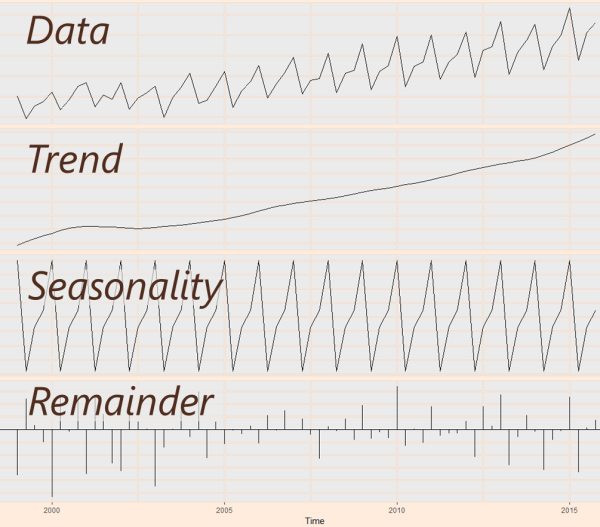
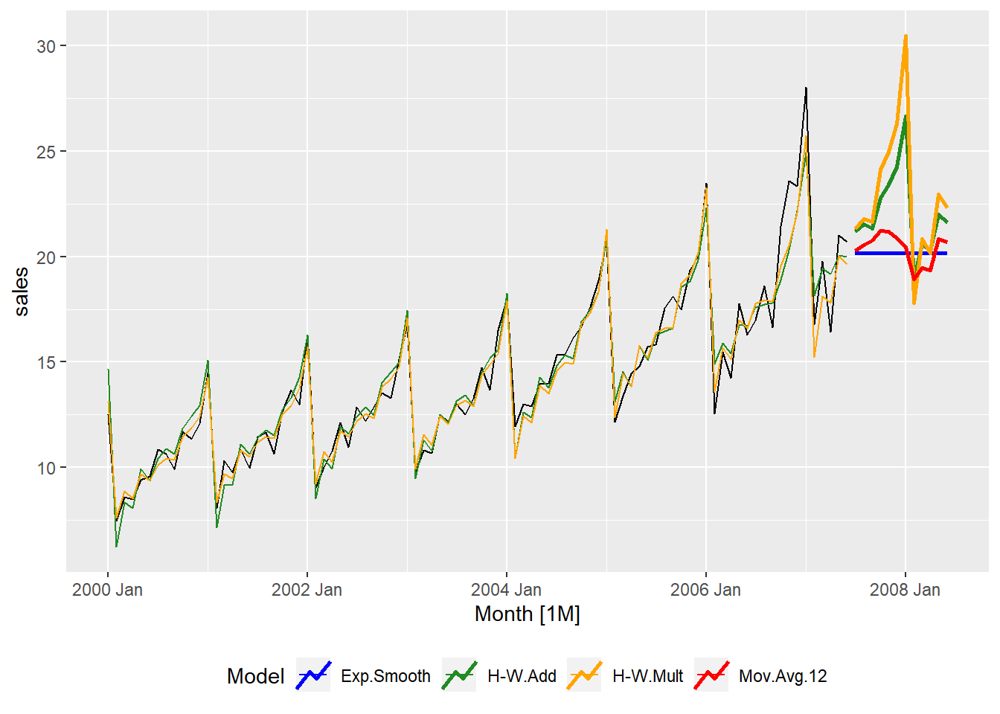
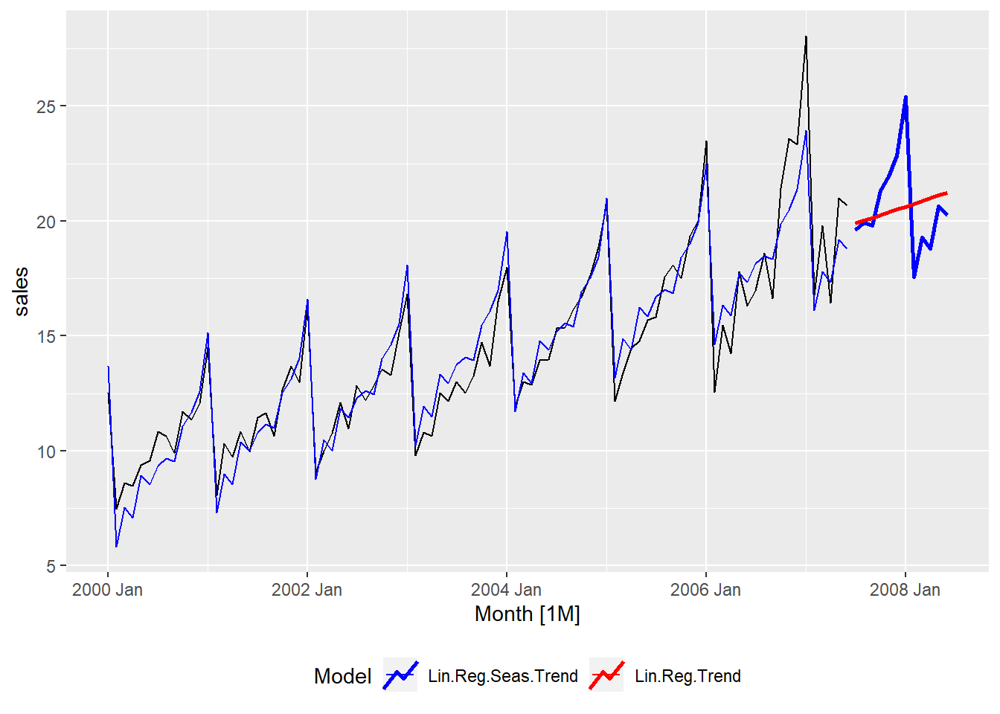
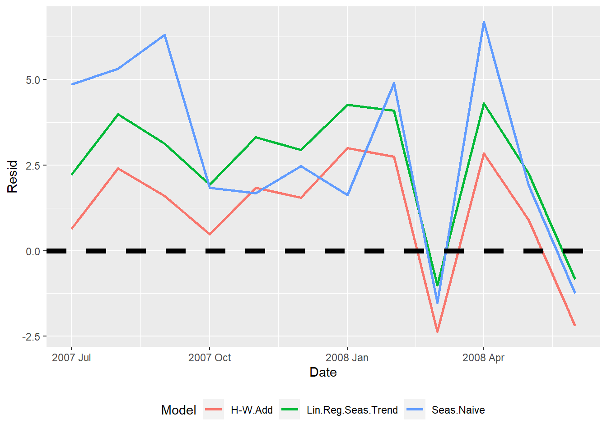
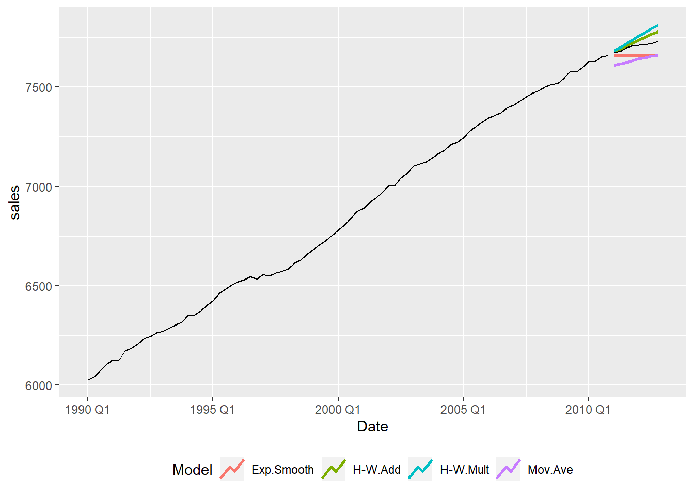
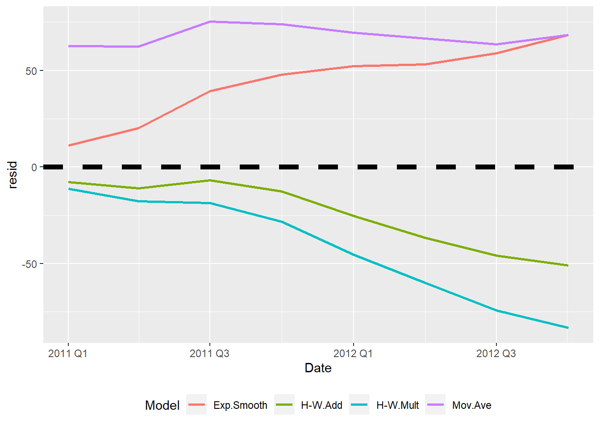
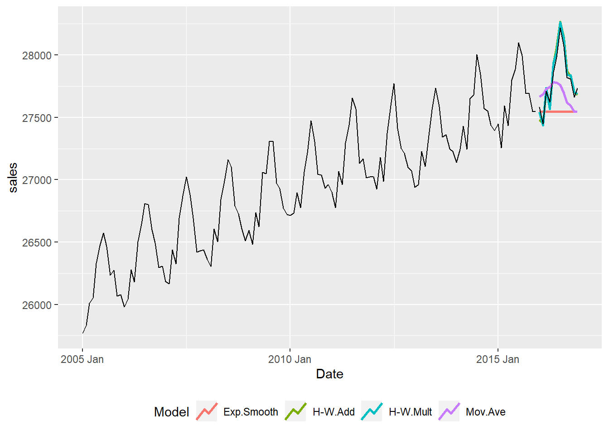
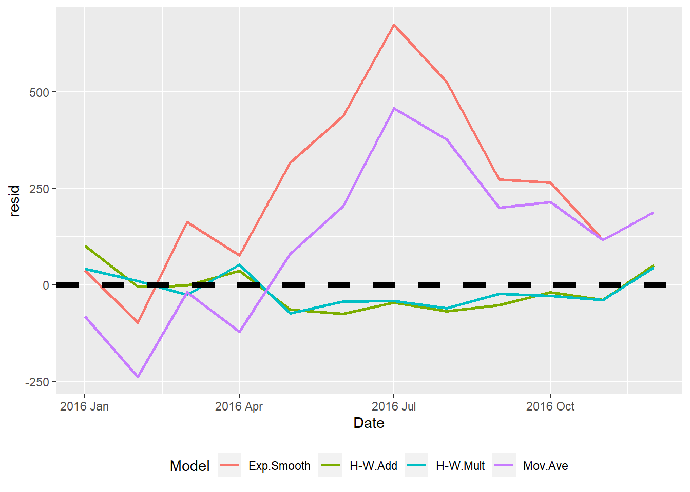

Topic 10 Forecasting I
10.1 R Packages and Datasets for Topic 10
library(ggplot2) # Advanced graphing capabilities
library(dplyr) # Easier programming
library(fpp3)
library(slider)
library(cowplot)
load("Topic10/monthlysales.rdata")10.2 Overview
10.2.1 The Concept of Forecasting
- Firms must make forecasts, but…
…Forecasing is difficult and challenging - Marketing strategy focuses on the long term…
…Making the task more difficult and challenging - Forecasting is not about “getting the future right”
- Forecasting is about helping manage uncertainty
- Question to Ask
- What are we forecasting?
- Why do we need the forecast?
10.3 Forecasting Methods
- Judgmental
- Sales force estimates
- Jury of experts
- Structured processes
- Market/Product Analysis
- Surveys
- Market tests
- ATAR
- Time Series
- Naïve methods
- Smoothing techniques
- Box-Jenkins methods
- Regression/Econometric
- Linear
- Non-Linear
10.4 Forecasting - Time Series
- Decomposition: splitting data into components
- Trend
- Seasonality
- Reaminder

10.5 Naïve Methods
10.5.1 Naïve
- Forecast future values to be same as the last observation
\(\hat{y_t}=y_{t-1}\)
- Easy to use, but…
- What about…
- Seasonality?
- Trend?
- Seasonality?
10.5.2 Seasonal Naïve
- Forecast future values to be same as the last observation of the same period
\(\hat{y_t}=y_{t-m}\)
- Easy to use, but…
- What about…
- Trend?
10.5.3 Naïve with Drift
- Forecast future values to be same as the last observation plus the average change per period
\(\hat{y_t}=y_{t-1}+(\frac{y_{t-1}-y_1}{T-1})\)
- Easy to use, but…
- What about…
- Seasonality?
10.5.4 Seasonal Naïve with Drift
- Forecast future values to be same as the last observation of the same time period plus the average change per period
10.5.5 Summary
- Naïve models may work, but…
- Usually serve as a benchmark rather than preferred method
10.6 Smoothing Techniques
10.6.1 Moving Average
- Classic method to smooth randomness
\(\begin{aligned} \hat{y_t}=\frac{1}{m}\sum_{j=1}^{m}y_{t-j} \end{aligned}\) - Short-range forecast
- Best for one-step ahead forecast
- Best for one-step ahead forecast
- Doesn’t account for trend or seasonality

10.6.2 Exponential Smoothing
- Weighted moving average approach with geometrically declining weights
- Uses smoothing parameter
- A larger parameter puts more weight on recent periods

- Parameter can be manually input…
- Better to optimize parameter by minimizing the error
- Doesn’t really account for trend and seasonality
10.6.3 Holt-Winters Smoothing
- Extends exponential smoothing
- Adds additional smoothing parameters for:
- Trend
- Seasonality
- Trend
- Adds additional smoothing parameters for:
- Better if forecasting multiple periods
- Two methods: Additive and Multiplicative

- Additive
- Use when seasonal effects are roughly constant throughout
- Multiplicative
- Use when seasonal effects respond proportionally to the trend
10.7 Regression-based
- Can be used to model simple trend and seasonality
- Linear model: \(y_t=\alpha+\beta x_t\)
- To model trend, substitute \(t\) for \(x_t\)
\(y_t=\alpha+\beta t\) - To model seasonality, substitute \(s\) dummies for \(x_t\):
\(y_t=\alpha+\gamma_1 S_1+\dots+\gamma_{s-1}S_{s-1}\) - Combine to model trend and seasonality:
\(y_t=\alpha+\beta t+\gamma_1 S_1+\dots+\gamma_{s-1}S_{s-1}\)
10.7.1 Trend only
- \(y_t=\alpha+\beta t\)
- Forecast is simply a straight line
10.7.2 Trend and Seasonality
- \(y_t=\alpha+\beta t+\gamma_1 S_1+\dots+\gamma_{s-1}S_{s-1}\)
- Forecast follows pattern

10.8 Forecast Accuracy
- Important to evaluate forecast accuracy
- Predicted values of test data time periods

10.8.1 Measures
- Calculate error in each test data time period:
\(e_{T+h}=y_{T+h}-\hat{y}_{T+h}\)
- Use Mean Absolute Error, Root Mean Squared Error, and Mean Absolute Percentage Error to compare models
- Mean Absolute Error (MAE):
\(\begin{aligned} \frac{\sum_{t=T+1}^{T+h}|e_t|}{n} \end{aligned}\) - Root Mean Squared Error (RMSE):
\(\begin{aligned} \sqrt\frac{\sum_{t=T+1}^{T+h}e_t^2}{n} \end{aligned}\) - Mean Absolute Percentage Error (MAPE):
\(\begin{aligned} \frac{\sum_{t=T+1}^{T+h}|e_t/y_t|}{n}\times 100 \end{aligned}\) - Lower values indicate better forecast accuracy
10.8.2 Visual
- Visually examine forecast errors for test data
- Forecast errors closer to 0 indicate better forecast

10.9 Forecasting Example 1
10.9.1 Data
- Quarterly sales data from 1990 through 2012
- Variables:
- Time period (\(t\))
- Sales from 1990 through 2010 (\(sales\))
- Goal: Forecast quarterly sales for the next two years
10.9.2 Examine Data
Figure 10.1: Time Series Plot (R code)
- Trend? Yes
- Seasonlity? No
- Potential Models?
- Naïve with Drift
- Moving Average
- Holt-Winters
- Regression Trend
10.9.3 Naïve Methods
- Run all methods
- Plot dynamic forecasts
- Naïve underestimates
- Naïve with Drift over estimates
- Seasonal methods not appropriate
Figure 10.2: Naive Methods Plot (R code)
- Examine accuracy
- Surprisingly, Naïve performs slightly better, than Naïve with Drift
- Lowest RMSE, MAE, and MAPE
- Surprisingly, Naïve performs slightly better, than Naïve with Drift
Model | RMSE | MAE | MAPE |
Naive | 47.561 | 43.933 | 0.570 |
Naive.Drift | 52.606 | 44.515 | 0.577 |
Seas.Naive | 63.075 | 61.138 | 0.793 |
Seas.Naive.Drift | 62.954 | 57.381 | 0.744 |
- Examine forecast residuals
- Naïve and Naïve with Drift appear similar
Figure 10.3: Naive Methods Forecast Residuals (R code)
- Naïve and Naïve with Drift appear similar
10.9.4 Smoothing Methods
- Run all methods
- Plot dynamic forecasts
- Moving Average underestimates
- Both Holt-Winters overestimate, but not by much
- Exponential Smoothing a poor fit

Figure 10.4: Smoothing Methods Plot (R code)
- Examine accuracy
- Holt-Winters Additive is clearly the best model
- Much lower RMSE, MAE, and MAPE
- Holt-Winters Additive is clearly the best model
Model | RMSE | MAE | MAPE |
Exp.Smooth | 47.562 | 43.933 | 0.570 |
H-W.Add | 29.721 | 24.660 | 0.320 |
H-W.Mult | 49.578 | 42.339 | 0.549 |
Mov.Ave | 67.934 | 67.774 | 0.880 |
- Examine forecast residuals
- Holt-Winters Additive consistently closer to 0

Figure 10.5: Smoothing Methods Forecast Residuals (R code)
- Holt-Winters Additive consistently closer to 0
10.9.5 Regression Methods
- Run all methods
- Plot dynamic forecasts
- Both methods nearly identical…
- But we know there isn’t seasonality
Figure 10.6: Regression Methods Plot (R code)
- Examine accuracy
- Both methods nearly identical…
- But we know there isn’t seasonality
Model | RMSE | MAE | MAPE |
Lin.Reg.Seas.Trend | 84.118 | 79.090 | 1.026 |
Lin.Reg.Trend | 84.204 | 78.972 | 1.024 |
- Examine forecast residuals
- Both methods nearly identical…
- But we know there isn’t seasonality
Figure 10.7: Regression Methods Forecast Residuals (R code)
10.9.6 Compare Best Models
- Examine RMSE, MAE, MAPE, and Forecast Error Plot
Loading required package: purrr
Attaching package: 'purrr'The following object is masked from 'package:caret':
liftThe following object is masked from 'package:flextable':
composeThe following object is masked from 'package:mosaic':
crossThe following object is masked from 'package:scales':
discardFigure 10.8: Forecase Residuals Comparison (R code)
Model | RMSE | MAE | MAPE |
Naive | 47.561 | 43.933 | 0.570 |
H-W.Add | 29.721 | 24.660 | 0.320 |
Lin.Reg.Trend | 84.204 | 78.972 | 1.024 |
- None of the models do a great job, especially farther out
- Holt-Winters and Naïve with Drift seem to do the best
10.10 Forecasting Example 2
10.10.1 Data
- Monthly Sales from 2005 through 2016
- Variables:
- Time period (\(t\))
- Sales per period (\(sales\))
- Goal: Forecast quarterly sales for the next 12 months
10.10.2 Examine Data
Figure 10.9: Time Series Plot (R code)
- Trend? Yes
- Seasonlity? Yes
- Potential Models?
- Seasonal Naïve with Drift
- Holt-Winters
- Regression Seasonal Trend
10.10.3 Naïve Methods
- Run all methods
- Plot dynamic forecasts
- Naïve and Naïve with Drift mostly under estimate due to seasonality and drift
- Seasonal Naïve and Seasonal Naïve with Drift seem pretty good
Figure 10.10: Naive Methods Plot (R code)
- Examine accuracy
- Seasonal Naïve with Drift is by far the best model
- Lowest RMSE, MAE, and MAPE
- Seasonal Naïve with Drift is by far the best model
Model | RMSE | MAE | MAPE |
Naive | 323.496 | 263.917 | 0.945 |
Naive.Drift | 253.103 | 185.868 | 0.665 |
Seas.Naive | 133.710 | 127.417 | 0.459 |
Seas.Naive.Drift | 45.769 | 41.417 | 0.149 |
- Examine forecast residuals
- Seasonal Naïve and Seasonal Naïve with Drift appear similar, but the latter hugs the \(0\) line very closely
Figure 10.11: Naive Methods Forecast Residuals (R code)
- Seasonal Naïve and Seasonal Naïve with Drift appear similar, but the latter hugs the \(0\) line very closely
10.10.4 Smoothing Methods
- Run all methods
- Plot dynamic forecasts
- Moving Average underestimates
- Both Holt-Winters seem very good fits
- Exponential Smoothing a poor fit

Figure 10.12: Smoothing Methods Plot (R code)
- Examine accuracy
- Both Holt-Winters are good, but Multiplicative is slightly better
- Lower RMSE, MAE, and MAPE
- Both Holt-Winters are good, but Multiplicative is slightly better
Model | RMSE | MAE | MAPE |
Exp.Smooth | 323.495 | 263.915 | 0.945 |
H-W.Add | 54.469 | 46.754 | 0.168 |
H-W.Mult | 43.857 | 40.626 | 0.146 |
Mov.Ave | 225.685 | 191.245 | 0.686 |
- Examine forecast residuals
- Both Holt-Winters hug the \(0\) line

Figure 10.13: Smoothing Methods Forecast Residuals (R code)
- Both Holt-Winters hug the \(0\) line
10.10.5 Regression Methods
- Run all methods
- Plot dynamic forecasts
- Seasonal method very good forecast
- Trend alone not effective
Figure 10.14: Regression Methods Plot (R code)
- Examine accuracy
- Seasonal method much better
- Lower RMSE, MAE, and MAPE
- Seasonal method much better
Model | RMSE | MAE | MAPE |
Lin.Reg.Seas.Trend | 55.212 | 47.898 | 0.172 |
Lin.Reg.Trend | 199.198 | 168.985 | 0.607 |
- Examine forecast residuals
- Seasonal method hugs the \(0\) line
Figure 10.15: Regression Methods Forecast Residuals (R code)
- Seasonal method hugs the \(0\) line
10.10.6 Compare Best Models
- Examine RMSE, MAE, MAPE, and Forecast Error Plot
Figure 10.16: Forecase Residuals Comparison (R code)
Model | RMSE | MAE | MAPE |
Seas.Naive.Drift | 45.769 | 41.417 | 0.149 |
H-W.Add | 54.469 | 46.754 | 0.168 |
H-W.Mult | 43.857 | 40.626 | 0.146 |
Lin.Reg.Seas.Trend | 55.212 | 47.898 | 0.172 |
- Holt-Winters Multiplicative does slightly better than Seasonal Naïve with Drift
- Both are better than the other two options
10.11 Suggested Readings
- Principles of Marketing Engineering and Analytics, 3rd Edition (2017). Lilien, Gary L., Rangaswamy, Arvind, and De Bruyn, Arnaud.
- Course reserves
- Chapter 5: Forecasting
- Course reserves
- Forecasting: Principles and Practice, 3rd Edition (2021). Hyndman, Rob J., and Athanasopoulos, George.
- Online Texts
https://otexts.com/fpp3/
- Online Texts
10.12 R Code
Figure 10.1
load("qsales.rdata") # Load Data
source("tsplot.R") # Source tsplot user defined function
tsplot(data=qsales, # Data frame
tvar="t", # Date variable
obs="sales", # Measure variable
datetype="yq", # Date type
h=8) # Number of holdout periodsFigure 10.2
source("naivefc.R") # Source naive methods user defined function
# Save results to object
results <- naivefc(qsales, # Data frame
"t", # Date variable
"sales", # Measure variable
"yq", # Date type
8) # Number of holdout periods
results$plot # Request plotFigure 10.3
results$fcresplot # Request forecast residual plot from previous saved resultsFigure 10.4
source("smoothfc.R") # Source smooth methods user defined function
results2 <- smoothfc(qsales, "t", "sales", "yq", 8) # Save results to object
results2$plot # Request plotFigure 10.5
results2$fcresplot # Request forecast residual plot from previous saved resultsFigure 10.6
source("linregfc.R") # Source regression methods user defined function
results3 <- linregfc(qsales, "t", "sales", "yq", 8) # Save results to object
results3$plot # Request plotFigure 10.7
results3$fcresplot # Request forecast residual plot from previous saved resultsFigure 10.8
source("fccompare.R") # Source forecast compare user defined function
resultslist <- list(results, results2, results3) # Create list of result objects
models <- c("Naive", "H-W.Add", "Lin.Reg.Trend") # Create object with requested models
compare <- fccompare(resultslist, # List of results created above
models) # Models we want to compare
compare$fcresplot # Request plotFigure 10.9
load("msales.rdata") # Load Data
tsplot(data=msales, # Data frame
tvar="t", # Date variable
obs="sales", # Measure variable
datetype="ym", # Date type
h=12) # Number of holdout periodsFigure 10.10
# Save results to object
na.results <- naivefc(msales, "t", "sales", "ym", 12)
na.results$plot # Request plotFigure 10.11
na.results$fcresplot # Request forecast residual plot from previous saved resultsFigure 10.12
sm.results <- smoothfc(msales, "t", "sales", "ym", 12) # Save results to object
sm.results$plot # Request plotFigure 10.13
sm.results$fcresplot # Request forecast residual plot from previous saved resultsFigure 10.14
lr.results <- linregfc(msales, "t", "sales", "ym", 12) # Save results to object
lr.results$plot # Request plotFigure 10.15
lr.results$fcresplot # Request forecast residual plot from previous saved resultsFigure 10.16
resultslist <- list(na.results, sm.results, lr.results) # Create list of result objects
models <- c("Seas.Naive.Drift", "H-W.Add", "H-W.Mult", "Lin.Reg.Seas.Trend") # Create object with requested models
compare <- fccompare(resultslist, # List of results created above
models) # Models we want to compare
compare$fcresplot # Request plotTable ??
results$acc # Request accuracy table from previous saved resultsTable ??
results2$acc # Request accuracy table from previous saved resultsTable ??
results3$acc # Request accuracy table from previous saved resultsTable ??
compare$acc # Request accuracy tableTable ??
na.results$acc # Request accuracy table from previous saved resultsTable ??
sm.results$acc # Request accuracy table from previous saved resultsTable ??
lr.results$acc # Request accuracy table from previous saved resultsTable ??
compare$acc # Request accuracy table